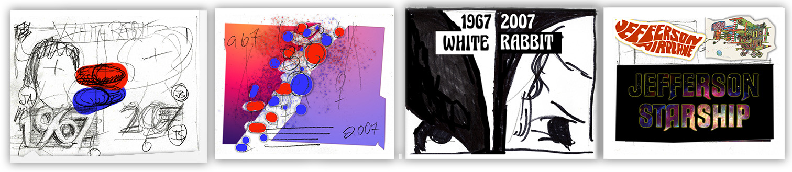

C4D: The Pills
For the video, I created two backdrops for the pills, one motif is just the Red and Blue pills, the other motif is the Yellow, Lt Blue, Red and Blue pills.
First, I set up the C4D file to match the file size of output. Next, I created the two pills, the textures, camera, and lights then began experimenting with the settings to get a look I liked.
Whats cool about this, is that all the elements are editable so I was able to twist, turn and position the pill clusters where I wanted. Each screensize required a slightly different placement of elements, so I created three files for eachy size.
Once the file was created, I exported each frame as a seperate Photoshop document. I then was able to edit the opacity of the background.
I used multiple files for the pills. One file was just for the animation. It was set to the screensize of the video then rendered to a video that was then imported into the Premier project.
I also had made the "My Turntable" movie on my own during the summer break. Using the techniques learned in the MMDI 15A class I made the turntalbe movie just for fun. I thought I would try and use it for this project, but it was cut during the review process. No big deal though, I like the end result much better.
MMDI 15A with Michel Bobhot is the class to teach you all these great skills to make all kinds of objects which can be used in Photoshop.
Click on the image to see a larger view.
Click to see the "Turntable" movie.
Photoshop
With Photoshop, I edited a few images for the video and all the images for the Social Media ads.
I was able to combine the exported C4D JPG files into Photoshop layers to adjust the background image, edit various images for the video and the layout as well as this website.
I used Photoshop from the very beginning of this project. Here are my storyboards for the social media cards.
Click on the image to see a larger view.
Here is a screenshot of the C4D file output in a Photoshop document.
I used Photoshop to adjust the brightness of the background, then saved as a PNG file for Illustrator.
Click on the image to see a larger view.
These are the Social Media cards for each platform.
The sized are gathered from the respective social media sites.
Click on the image to see a larger view.
Illustrator
Illustrator's Image Trace helped me recreate the logo. I would have expected a big name band to have a logo on logoseek.com, but they didn't. During the break I will upload one!!
Text in Illustrator comes out so much cleaner than Photoshop, making it perfect for laying out the different sized media cards.
here is text
Click on the image to see a larger view.
Premier and After Effects
My MMVI 9A class was all about video editing. Premier is full of so many really cool tools. Last semester in MMVI 9A - Intro to Video Production, we where introduced to Premier. MMVI 20A was all about exploring what Premier can do.
Last semester, I used Illustrator to create the tile for my final video project. That short lesson about importing Photoshop or Illustrator into Premier opened up yet one more internet rabbit hole for me to go down.
This panel doesnt really show the full library, but I used After Effects to create the floating masks and ending sequence of the video.
The TA for video editing suggested using After Effects for masking and the ending sequence. She said "Premier is good for somethings, but After Effects is better for alot of things."

Click on the image to see a larger view.
The "Draft" Verison
This is a draft of the video. There will be some changes...
Please, click on the Play button to view the draft.
The "Final" Video
Here is the latest and greatest cut of the video. It needs at least one more pass, but as you can see its somewhat different that when I started.
Please click the image to view my Final Project video
Also, please feel free to leave a comment on my YouTube page.
Thank you Berkeley City College. Go